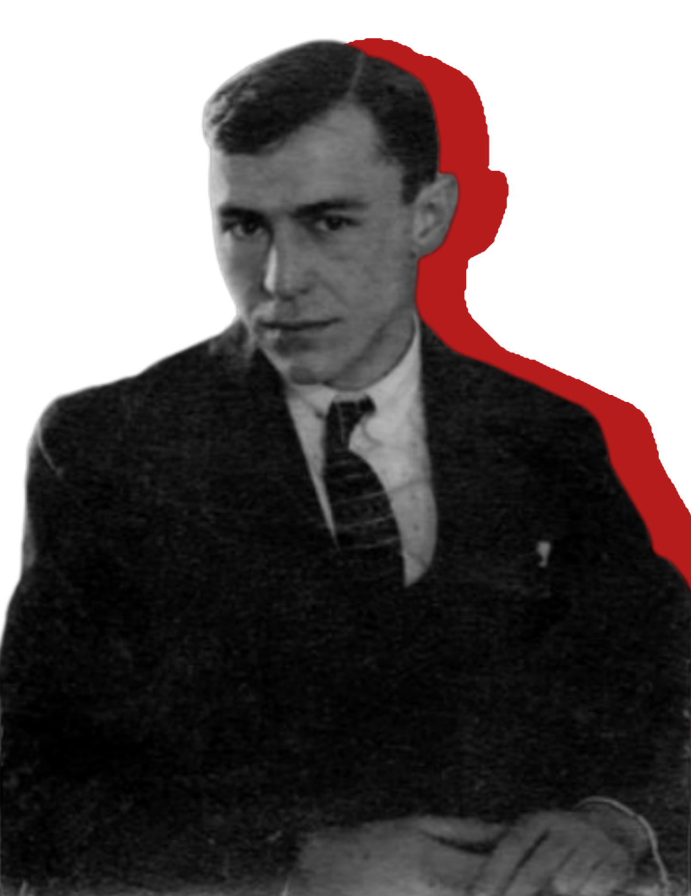
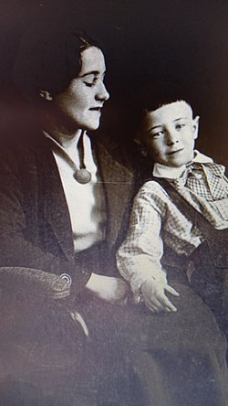
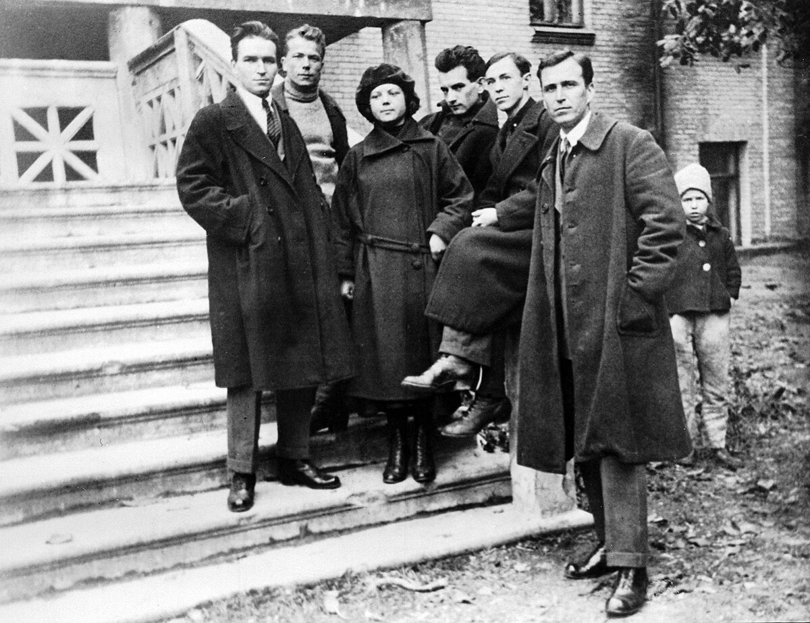
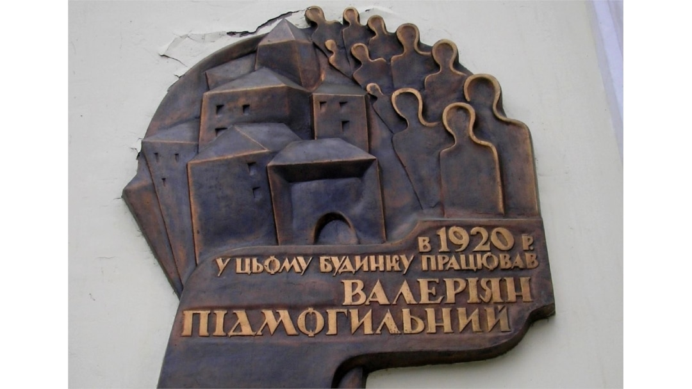

Валер'ян Підмогильний
1901 – 1937
«І це ж велике щастя — знайти щось велике там, де всі добачали тільки дріб'язок!»
1901 – 1937
«І це ж велике щастя — знайти щось велике там, де всі добачали тільки дріб'язок!»
Валер'ян Підмогильний – ключова постать української культури, чий роман "Місто" започаткував нову еру в прозі, збагативши її інтелектуалізмом та урбаністичною тематикою. Його майстерне відображення суспільних змін та психології нової людини зробило його внесок у літературну мову неоціненним.
Підмогильний став трагічною жертвою Розстріляного відродження, репресованим та розстріляним радянською владою у 1937 році. Його передчасна смерть стала величезною втратою для української культури, а пам'ять про нього та інших знищених митців є важливим нагадуванням про трагічні сторінки історії та необхідність збереження культурної спадщини.
Валер’ян Підмогильний народився 2 лютого 1901 року в бідній селянській родині в селі Чаплі на Катеринославщині (Дніпропетровщині).
Батько у ті часи завідував маєтком місцевого поміщика, помер рано. Згадуючи своє дитинство, Валер’ян Підмогильний писав: «Так мало батьківських пестощів випало на мою долю». Мати – за свідченнями односельців була звичайною селянкою, без освіти, але відзначалася надзвичайною вродженою інтелігентністю. Відомо, що вона працювала в економії графа Воронцова-Дашкова.
Спочатку Валер’ян навчався у церковно-приходській школі, а з 1910 по 1918 рік – у Першому катеринославському реальному училищі, яке закінчив з «відзнакою». Після училища – вступив до Катеринославського університету – навчався на математичному і юридичному факультетах, але громадянська війна, голод і матеріальні труднощі змусили його залишити навчання.
З 1919 по 1921 рік Підмогильний працював вчителем у Павлограді, де проживали у ті часи його батьки, та у Катеринославі. Одночасно вивчав російську, німецьку та французьку мови.
У 1921 році переїхав до Києва й близько року працював бібліографом у Книжковій палаті. Рятуючись від голоду, оселився у передмісті Києва – Ворзелі й викладав у трудовій школі українську мову та політосвіту. У ті часи познайомився з донькою місцевого священика – Катериною Червінською, актрисою Театру юного глядача і одружився з нею. У 1922 році разом з дружиною знову оселився в Києві і почав працювати редактором у видавництві «Книгоспілка», а з 1925 року – у журналі «Життя й революція».
Валер’ян Підмогильний став одним із засновників літературної організації «Ланка». Після 1924 року вона стала називатися «Марс» – Майстерня революційного слова. Відомо, що до її складу входили тогочасні молоді талановиті літератори: Борис Антоненко-Давидович, Григорій Косинка, Тодось Осьмачка, Євген Плужник, Дмитро Фальківський. У 1928 році Підмогильний відвідав Німеччину і Чехословаччину «для налагодження творчих зв’язків».
Починаючи з 1930 року письменнику було все важче друкувати свої твори і, сподіваючись на кращі можливості для їхніх публікацій й розраховуючи на свій авторитет перекладача, Підмогильний з дружиною у 1931 році переїхав до Харкова. Там він спочатку працював у видавництві «ЛІМ», потім отримав посаду консультанта з іноземної літератури при видавництві «Рух».
8 грудня 1934 р. Валер’яна Підмогильного заарештували за сфабрикованим звинуваченням: «участь у роботі терористичної організації, що ставила собі за мету організацію терору проти керівників партії». На допитах письменник свою вину не визнавав, поводився гідно і відстоював свої принципи. У одному з протоколів наводяться його слова: «Я не належав до організації. Я вважав, що постанови партії по національному питанню в життя не проводяться», а також висловлювання про те, що «політика колективізації привела українське село до голоду».
Виїзною сесією Військової колегії Верховного Суду СРСР 27 березня 1935 року Підмогильного засудили на десять років позбавлення волі з відбуванням покарання у Соловецькому таборі особливого призначення. 9 червня 1935 р. він прибув на Соловки як особливо небезпечний політичний злочинець.
У соловецькому таборі в умовах ізолятора Підмогильний продовжував писати. Збереглось 25 його листів до дружини, у яких він розповідав про свої переклади, розпочаті повісті та оповідання, зокрема про роботу над романом «Осінь 1929», в якому йшлося про початок колективізації в Україні. У листопаді 1937 р. особлива трійка УНКВС винесла письменникові новий вирок – «Розстріляти».
3 листопада 1937 року разом з Підмогильним в урочищі Сандармох у Карелії були розстріляні письменники: Микола Зеров, Валер’ян Поліщук, Григорій Епік, Лесь Курбас, Микола Куліш, Мирослав Ірчан, Юліан Шпол. У 1956 році Валер’яна Підмогильного посмертно було реабілітовано.
Вулиця Валер'яна Підмогильного знаходиться у місті Київ.
13 квітня 2023 року у селищі Ворзель проспект 1 Травня було перейменовано на вулицю Валер'яна Підмогильного.
Романи «Місто» і «Маленька драма» введені до програми з української літератури середньої школи.
Меморіальна дошка письменнику Варер’янові Підмогильному (1901–1937), встановлена 2011 року в місті Дніпрі на стіні нинішнього будинку музею «Літературне Придніпров’я», де він свого часу працював

1. Підмогильний був настільки проникливим психологом, що міг читати думки людей, просто подивившись їм в очі.
Це допомагало йому створювати таких живих та реалістичних персонажів.
Хоча Підмогильний дійсно був майстром психологічного аналізу і глибоко розумів людську природу, немає жодних
доказів його здатності до телепатії чи читання думок. Його майстерність у створенні персонажів ґрунтувалася на спостережливості,
емпатії та глибокому знанні людських мотивацій, а не на містичних здібностях.
2. У молодості Підмогильний втік з дому і довгий час мандрував світом пішки, відвідуючи екзотичні країни та спілкуючись з
різними культурами, що збагатило його світогляд.
Біографія Валер'яна Підмогильного свідчить про його навчання в університеті та роботу в Україні. Хоча він цікавився
світовою культурою, немає відомостей про тривалі піші мандрівки екзотичними країнами в його молодості. Його світогляд
формувався переважно через читання, навчання та спілкування в інтелектуальних колах.
3. Кожен свій твір Підмогильний писав виключно гусячим пером при світлі свічки, вважаючи, що це єдиний спосіб досягти
справжньої літературної майстерності.
Це романтичний, але малоймовірний міф. У 20-30-х роках XX століття гусяче перо вже було анахронізмом.
Підмогильний, як інтелектуал свого часу, швидше за все, користувався звичайними письмовим приладдям того часу, таким
як ручка або друкарська машинка.
4. Підмогильний був настільки майстерним шахістом, що міг грати одночасно кілька партій наосліп і завжди перемагав
своїх суперників, навіть найсильніших гросмейстерів того часу.
Немає жодних відомостей про те, що Валер'ян Підмогильний серйозно займався шахами, тим більше досягав якихось
видатних успіхів у цій грі. Його основною пристрастю та професією була література. Міф про його шахові здібності,
ймовірно, є вигадкою, що приписує йому ще одну грань таланту.